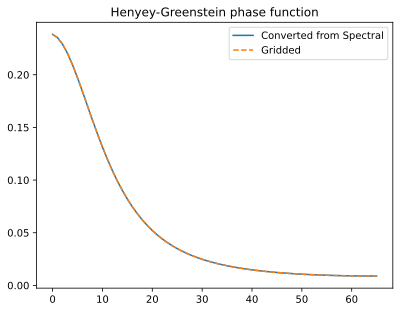
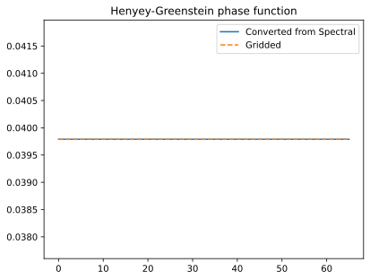

Scattering calculations
"""
Scattering calculations
This example demonstrates the basic principles of performing scattering
calcualtions with ARTS. Populations of particles that scatter radiation are
referred to as *scattering species*. Each scattering species defines a mapping
from one or several fields of *scattering species properties* to *scattering
properties* which form the input to the actual scattering calculation.
"""
import os
import matplotlib.pyplot as plt
import numpy as np
import pyarts3 as pyarts
from pyarts3.arts import ArrayOfScatteringSpecies, HenyeyGreensteinScatterer
# Download catalogs
pyarts.data.download()
# %% Set up a 1D atmosphere
ws = pyarts.Workspace()
ws.surf_fieldPlanet(option="Earth")
ws.surf_field[pyarts.arts.SurfaceKey("t")] = 295.0
ws.atm_fieldRead(
toa=100e3, basename="planets/Earth/afgl/tropical/", missing_is_zero=1
)
ws.atm_fieldIGRF(time="2000-03-11 14:39:37")
# %% Add a field of scattering species properties
#
# For this example, we will use scatterers with a Henyey-Greenstein phase
# function to represent ice particles. We will use two *scattering species
# properties* to represent the scattering species *ice*: The extinction and
# the single-scattering albed (SSA). The ice extinction and SSA thus become
# atmospheric fields. Below we define scattering-species-property object that
# identify these fields.
ice_extinction = pyarts.arts.ScatteringSpeciesProperty(
"ice", pyarts.arts.ParticulateProperty("Extinction")
)
ice_ssa = pyarts.arts.ScatteringSpeciesProperty(
"ice", pyarts.arts.ParticulateProperty("SingleScatteringAlbedo")
)
# We then define a GriddedField3 representing the ice extinction and
# single-scattering albedo and add it to ``atm_field`` of the workspace.
grids = ws.atm_field["t"].data.grids
z = grids[0]
ice_extinction_profile = np.zeros_like(z)
ice_extinction_profile[(z > 5e3) * (z < 15e3)] = 1.0
ice_extinction_profile = pyarts.arts.GriddedField3(
data=ice_extinction_profile[..., None, None], grids=grids
)
ws.atm_field[ice_extinction] = ice_extinction_profile
ice_ssa_profile = np.zeros_like(z)
ice_ssa_profile[(z > 5e3) * (z < 15e3)] = 0.5
ice_ssa_profile = pyarts.arts.GriddedField3(
data=ice_ssa_profile[..., None, None], grids=grids
)
ws.atm_field[ice_ssa] = ice_ssa_profile
# %% Rain
rain_extinction = pyarts.arts.ScatteringSpeciesProperty(
"rain", pyarts.arts.ParticulateProperty("Extinction")
)
rain_ssa = pyarts.arts.ScatteringSpeciesProperty(
"rain", pyarts.arts.ParticulateProperty("SingleScatteringAlbedo")
)
rain_extinction_profile = np.zeros_like(z)
rain_extinction_profile[z < 5e3] = 1.0
rain_extinction_profile = pyarts.arts.GriddedField3(
data=rain_extinction_profile[..., None, None], grids=grids
)
ws.atm_field[rain_extinction] = rain_extinction_profile
rain_ssa_profile = np.zeros_like(z)
rain_ssa_profile[z < 5e3] = 0.5
rain_ssa_profile = pyarts.arts.GriddedField3(
data=rain_ssa_profile[..., None, None], grids=grids
)
ws.atm_field[rain_ssa] = rain_ssa_profile
# %% Create the scattering species
hg_ice = HenyeyGreensteinScatterer(ice_extinction, ice_ssa, 0.5)
hg_rain = HenyeyGreensteinScatterer(rain_extinction, rain_ssa, 0.0)
scattering_species = ArrayOfScatteringSpecies()
scattering_species.add(hg_ice)
scattering_species.add(hg_rain)
# ## Extracting scattering properties
#
# We can now extract bulk scattering properties from the scattering species.
# %% Ice
#
# We can extract the ice phase function from the combind scattering species
# by calculating the bulk-scattering properties at an altitude above 5 km. To
# check the consistency of the Henyey-Greenstein scatterer, we extract the data
# in gridded and spectral representation and ensure that they are the same when
# both are converted to gridded representation.
atm_pt = ws.atm_field(11e3, 0.0, 0.0)
f_grid = np.array([89e9])
bsp = scattering_species.get_bulk_scattering_properties_tro_spectral(atm_pt, f_grid, 32)
pm_spectral = bsp.phase_matrix
za_scat_grid = pyarts.arts.ScatteringTroSpectralVector.to_gridded(
pm_spectral
).get_za_scat_grid()
bsp = scattering_species.get_bulk_scattering_properties_tro_gridded(
atm_pt, f_grid, za_scat_grid
)
pm_gridded = bsp.phase_matrix
# %% Plot
fig, ax = plt.subplots()
ax.plot(
pyarts.arts.ScatteringTroSpectralVector.to_gridded(pm_spectral).flatten()[::6],
label="Converted from Spectral",
)
ax.plot(pm_gridded.flatten()[::6], ls="--", label="Gridded")
ax.set_title("Henyey-Greenstein phase function")
ax.legend()
# %% Rain
#
# Similarly, we can extract the phase function for rain by calculating the
# bulk-scattering properties at a lower point in the atmosphere.
atm_pt = ws.atm_field(4e3, 0.0, 0.0)
bsp = scattering_species.get_bulk_scattering_properties_tro_spectral(atm_pt, f_grid, 32)
pm_spectral = bsp.phase_matrix
za_scat_grid = pyarts.arts.ScatteringTroSpectralVector.to_gridded(
pm_spectral
).get_za_scat_grid()
bsp = scattering_species.get_bulk_scattering_properties_tro_gridded(
atm_pt, f_grid, za_scat_grid
)
pm_gridded = bsp.phase_matrix
# %% Plot
fig, ax = plt.subplots()
ax.plot(
pyarts.arts.ScatteringTroSpectralVector.to_gridded(pm_spectral).flatten()[::6],
label="Converted from Spectral",
)
ax.plot(pm_gridded.flatten()[::6], ls="--", label="Gridded")
ax.set_title("Henyey-Greenstein phase function")
ax.legend()
if "ARTS_HEADLESS" not in os.environ:
plt.show()

{kind=link}

{kind=link}